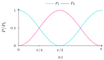

, excess loss , insertion loss and crosstalk (directivity) ; an
, excess loss , insertion loss and crosstalk (directivity) ; an  star coupler has an unavoidable splitting loss
star coupler has an unavoidable splitting loss Model
Two single-mode cores are fused and tapered: the modes spread out of the thinned cores and overlap (Kawasaki et al. 1981). Coupled-mode theory (directional couplers) with coupling coefficient  : , . Full transfer at the coupling length ; a 3 dB (50:50) coupler stops at . depends on
: , . Full transfer at the coupling length ; a 3 dB (50:50) coupler stops at . depends on  : a long coupler that is 0:100 at 1550 nm and 100:0 at 980 nm is the WDM coupler that combines pump and signal in an EDFA.
: a long coupler that is 0:100 at 1550 nm and 100:0 at 980 nm is the WDM coupler that combines pump and signal in an EDFA.
Picture
 and the coupled port ; is the back-reflected power.
and the coupled port ; is the back-reflected power.
, versus coupling length : power is exchanged periodically, split 3 dB at and fully transferred at .Performance parameters
| parameter | definition (dB unless stated) | typical |
|---|---|---|
| split ratio | P2/(P1+P2), in % | 50% or 10% |
| excess loss | 10 log [P0/(P1+P2)] | < 0.2 dB |
| insertion loss | 10 log (P0/P_out), per port | 3.2–3.6 dB |
| crosstalk | 10 log (P3/P0) | < −50 dB |
| return loss | 10 log (P0/P_reflected) | > 50 dB |
Insertion loss of a 3 dB coupler is never below 3.01 dB: half the power goes to the other port by design; the excess loss is what is really lost.
Worked examples
- Measured coupler: µW, µW, µW, nW. Split ratio ; excess loss dB; insertion loss 3.47 dB (to port 1) and 3.72 dB (to port 2); crosstalk dB.
- Star couplers: splitting loss
 = 9.0, 15.1, 18.1 dB for
= 9.0, 15.1, 18.1 dB for  , 32, 64; with 1.5 dB excess, 16.6 dB for a 1×32 splitter — the dominant term in a passive optical network.
, 32, 64; with 1.5 dB excess, 16.6 dB for a 1×32 splitter — the dominant term in a passive optical network. - PON budget: OLT transmitter +3 dBm, ONU sensitivity −28 dBm, 1×32 splitter (16.6 dB), 20 km at 0.35 dB/km (7 dB), two connectors (1 dB): total loss 24.6 dB, margin dB (link design).
Engineering applications
Taps for power monitoring (99:1), 3 dB couplers in Mach–Zehnder and Sagnac interferometers (fibre gyroscopes), pump/signal WDM couplers in EDFAs, 1×N splitters for FTTH passive optical networks, polarisation beam splitters.
Exam-style exercise
A 1×16 splitter has 1.2 dB excess loss and feeds 16 homes over 10 km of fibre (0.4 dB/km at 1310 nm) with two splices (0.1 dB each) and two connectors (0.5 dB each). The transmitter launches 0 dBm. (a) Power per home. (b) With a −27 dBm receiver, margin? (c) Can the splitter be 1×32 with a 3 dB margin?
Solution
(a) Splitting dB; total loss dB → −18.4 dBm. (b) Margin 8.6 dB. (c) 1×32 adds 3 dB (plus ≈ 0.3 dB more excess): margin ≈ 5.3 dB > 3 dB: yes.
Pitfall
In dB everything adds, but the splitting loss is not excess loss: quoting a 1×32 splitter as "15 dB lossy" is correct for the budget, wrong as a quality figure.